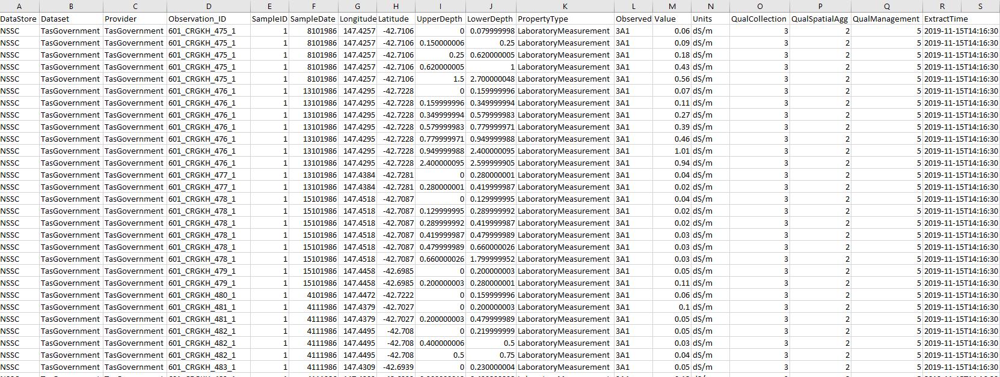

Soil and Landscape Grid
of Australia
SoilDataFederator
About
The SoilDataFederator is a web API that brings together soil site data from a range of disparate data sources. It allows the user to query soils data stores across Australia in a consistent manner and the data returned is a consistent format. Users do not need to know the details of each of the individual data stores structures and querying mechanisms. The data in the system is historical soil survey data and is composed of both soil morphological description data and laboratory analysis data. The SoilDataFederator will return all available data for a specified soil propertyThe SoilDataFederator web API is designed to be as simple as possible. Users can query API end point to return information about
- DataSets - which DataSets are available in the system.
- Properties - which soil properties are available in the system.
- PropertyGroups - defined groupings of Properties (a convenience for querying)
- SoilData end point.
The code for the SoilDataFederator system is written in R and can be found HERE
API Key Registration
You need to register for an API Key to be able to use the API to access the soil data. You can quickly register HERE. Just supply your email address, name and organisation and you are good to go. We might get in touch once in a while to ask for feedback or let you know about changes etc. All of the current endpoints will work without an API Key, except for the "GetSoilData" endpoint - the one you'll actually want to use. If you don't want to register, but instead you just want to check out how the API works you can use usr=Demo & key=Demo authentication. Only the first 5 records will be returned.Licensing
All data in SoilDataFederator system are publicly available, typically under a CC BY 4.0 license , meaning you are free to use this data as is but you must attribute the original source. No guarantee of accuracy or quality is made. Explicit licensing information for each data set can be obtained from the "Dataset" endpointExamples
The Swagger UI for the API is located HERE. The Swagger UI allows users to quickly test the functionality of the API.Below are some examples for the various endpoints in the API. You can click on these links to see what information is returned.
An R script which demonstrates how to access these endpoints can be downloaded HERE.
The endpoint can return data in either, json, xml or csv formats. The json format is by far the most efficient format for big data queries.
The API uses authentication (user name & password) to restrict access to data that is not publicly available. By default, only publicly available data sets are returned from queries.
The following endpoints are currently available in the SoilDataFederator
DataSets
The DataSets endpoint returns all of the DataSets available in the SoilDataFederator. Examples of the 3 different returned formats are listed below. After this, only the json example will be provided but other formats can be returned using the same query parameters.Endpoint Parameters
- format - format of the response to return. Either json, csv, or xml. Default = json
Endpoint Syntax
- https://esoil.io/TERNLandscapes/SoilDataFederatoR/SoilDataAPI/DataSets - Returns data as json format
- https://esoil.io/TERNLandscapes/SoilDataFederatoR/SoilDataAPI/DataSets?format=xml - Returns data as xml format
- https://esoil.io/TERNLandscapes/SoilDataFederatoR/SoilDataAPI/DataSets?format=csv - Returns data as csv file download
Properties
The Properties endpoint returns all of the soil properties known to the SoilDataFederator. Properties are broken down into two groups. ""FieldMeasurement" and "LaboratoryMeasurement" or more commonly known as Morphology and Lab data.Endpoint Parameters
- PropertyGroup (string) - filter on predefined groups of properties. The available PropertyGroups can be queried in the "PropertyGroups" endpoint. Default = All
- verbose (string) - The "Verbose" parameter can be used to restrict the amount of information returned for each individual property. If False (F) just a list of soil properties is returned. If True (T) a full description of each property is returned. The default is Verbose=T.
- format (string) - format of the response to return. Either json, csv, or xml. Default = json
Endpoint Syntax
- https://esoil.io/TERNLandscapes/SoilDataFederatoR/SoilDataAPI/Properties
- Returns a verbose list of soil properties
- https://esoil.io/TERNLandscapes/SoilDataFederatoR/SoilDataAPI/Properties?verbose=F - Returns just a list of soil properties
- https://esoil.io/TERNLandscapes/SoilDataFederatoR/SoilDataAPI/Properties?PropertyGroup=Soil pH
- Returns a list of soil properties for the "Soil pH"
PropertyGroup. This is analagous to the traditonal "Lab Method Groups"
- https://esoil.io/TERNLandscapes/SoilDataFederatoR/SoilDataAPI/Properties?PropertyGroup=COARSE_FRAGS - Returns a list of soil properties for the "COARSE_FRAGS" PropertyGroup. This is analagous to the traditonal Morpholgy Tables in the PC_Sites database schema.
PropertyGroups
The PropertyGroups endpoint returns all of the soil PropertyGroups known to the SoilDataFederator as described in the "Propeties" endpoint.Endpoint Parameters
- format (string) - format of the response to return. Either json, csv, or xml. Default = json
Endpoint Syntax
- https://esoil.io/TERNLandscapes/SoilDataFederatoR/SoilDataAPI/PropertyGroups - Returns a list of soil PropertyGroups
SoilData
The SoilData endpoint returns soil property data from all of the datasets in a consistent format. The SoilDataFederator queries the datasets individual datastore and translates the disparate data on the fly into a consistent format. Each dataset datastore is queried in turn, so it can take a long time for this endpoint to return data, depending on the amount of data to be retrieved. The examples below use the "numToReturn" parameter to reduce the number of records to be returned purely to speed up the demonstration. Remove this parameter to see the full dataset. The standard fields returned from this end point are listed below.Endpoint Parameters
- observedProperty (string) -
the soil property to query on. eg '3A1" or 'h_texture'. Either this
or the "observedPropertyGroup" parameter is required. This
can be a single provider code or a semi colon delimited
text string eg "3A1;4A1"
- observedPropertyGroup (string) - the soil PropertyGroup to query on. eg 'pH" or 'SURF_COARSE_FRAGS'. Either this or the "observedProperty" parameter is required.
- DataSet (string) - filter on specific data sets. This can be a single DataSet code or a semi colon delimited text string eg "TasGovernment;SAGovernment". If this parameter is not provided all the data Providers will be queried.
- bbox (string) - The rectangular bounding box of the area to query in the form minx;maxx;miny;maxy - semicolon delimited If this parameter is not provided all the data will be queried.
- format (string) - format of the response to return. Either json, csv, or xml. Default = json
- numToReturn (numeric) - specify the maximum number of records to be returned. If not supplied all records will be returned
- usr (string) -
username to access the API
- key (string) -
the API key
to
access the API
Endpoint Syntax
- https://esoil.io/TERNLandscapes/SoilDataFederatoR/SoilDataAPI/SoilData?observedProperty=3A1&DataSet=TasGovernment&usr=Demo&key=Demo - returns soil propery data filtered by a specifc Provider code. Only 5 records will be returned for demonstration purposes unless you have a registered API key
- https://esoil.io/TERNLandscapes/SoilDataFederatoR/SoilDataAPI/SoilData?observedProperty=4A1&usr=Demo&key=Demo
- returns ALL the data for requested soil Property. However, only 5
records will be returned for demonstration purposes unless you have a
registered API key
- https://esoil.io/TERNLandscapes/SoilDataFederatoR/SoilDataAPI/SoilData?observedPropertyGroup=DENSITY&usr=Demo&key=Demo
- returns the data for requested soil PropertyGroup. Looks like this
might be brocken at the moment
ObservationLocations
The ObservationLocations endpoint Returns all locations for which there is any data. ie soil sample location. Data for a specific property may or may not exist at these locationsEndpoint Parameters
- DataSet (string) - format of the response to return. Either json, csv, or xml. Default = json
- bbox (string) - The rectangular bounding box of the area to query in the form minx;maxx;miny;maxy - semicolon delimited If this parameter is not provided all the data will be queried.
- format (string) - format of the response to return. Either json, csv, or xml. Default = json
Endpoint Syntax
- https://esoil.io/TERNLandscapes/SoilDataFederatoR/SoilDataAPI/ObservationLocations?DataSet=TasGovernment - Returns a list of soil sample locations
Output Data Format
The fields returned from the SoilDataFederator for the "SoilData" endpont are- DataStore
- Dataset
- Provider
- Observation_ID
- SampleID
- SampleDate
- Longitude
- Latitude
- UpperDepth
- LowerDepth
- PropertyType
- ObservedProperty
- Value
- Units
- QualCollection
- QualSpatialAgg
- QualManagement
- ExtractTime
An example of what the returned data looks like

SLGA FundersPartners


TERN is supported by the Australian Government through the National Collaborative Research Infrastructure Strategy and the Super Science Initiative.